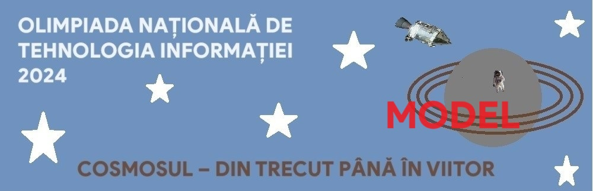

Cosmosul este universul văzut ca un sistem ordonat, opusul haosului.
Cuvinte incrucisate
- Pe orizontala
- Cea mai apropiata planeta de soare
- Planeta cu 27 sateliti
- Pe verticala
- A doua cea mai mare planeta
- A doua planeta de la Soare
| S | ||||
| S | O | A | R | E |
| L |


Cosmosul este universul văzut ca un sistem ordonat, opusul haosului.
| S | ||||
| S | O | A | R | E |
| L |